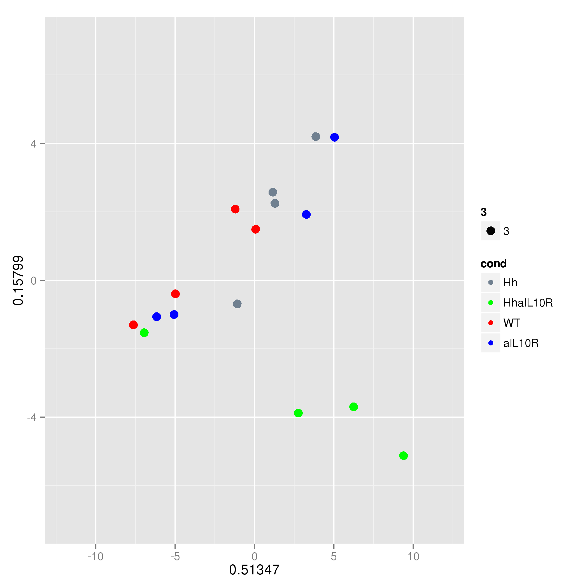
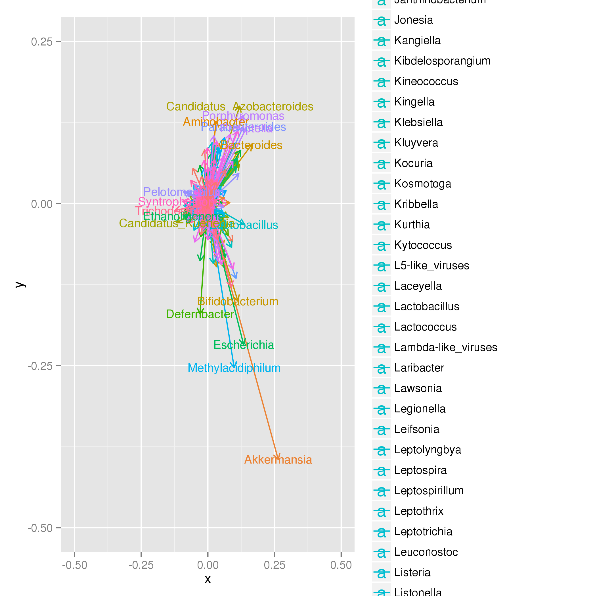

Principle components analysis¶
In Fig. 1 and 2 we performed principle components analysis on metagenomeSeq normalised counts at the level of genus and NOG (metagenomics and metatranscriptomics). As this is done separately for each data set we return to the DNA/ and RNA/ directories we created to run the functions. Below we show the functions we ran to produce the figures and to test significance of sample clustering using the PERMANOVA implemented in the adonis test (vegan).
In Fig. 1 we looked at genus abundances. Below is a representative example for the RNA analysis. This function produces the PCA plot (genus.diamond.aggregated.counts.pca.png) for components 1 and 2 and also outputs the loadings. The name of the plot is consistent with the name of the loadings outfile (apologies but the outfile must end in .loadings.tsv). You must be in the directory where you want the files to be produced, otherwise there will be an error:
>> import Proj029Pipelines.PipelineMetaomics as PipelineMetaomics
>> PipelineMetaomics.runPCA("genus.diamond.aggregated.counts.norm.matrix", "genus.diamond.aggregated.counts.loadings.tsv")
And produces the following plot.
{kind=link}
The adonis test in the module PipelineMetagenomeCommunities.py was run to test for significant clustering of conditions:
>> import CGATPipelines.PipelineMetagenomeCommunities as PipelineMetagenomeCommunities
>> PipelineMetagenomeCommunities.testDistSignificance("genus.diamond.aggregated.counts.norm.matrix", "genus.diamond.aggregated.counts.norm.permanova.sig")
The file “genus.diamond.aggregated.counts.norm.permanova.sig” contains the model fit and significance p-value.
As we did not see much in the way of significant difference of individual genera in our metagenomeSeq analysis we were interested in the PCA loadings on Genera. We can reproduce Fig.1d (right panel) using the following function:
>> PipelineMetaomics.plotPCALoadings("genus.diamond.aggregated.counts.loadings.tsv", "genus.diamond.aggregated.counts.loadings.png")
This will produce the following plot
{kind=link}
And that is Fig. 1 and half of Fig. 2 done!